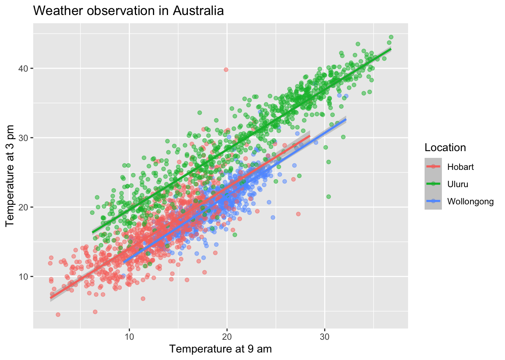
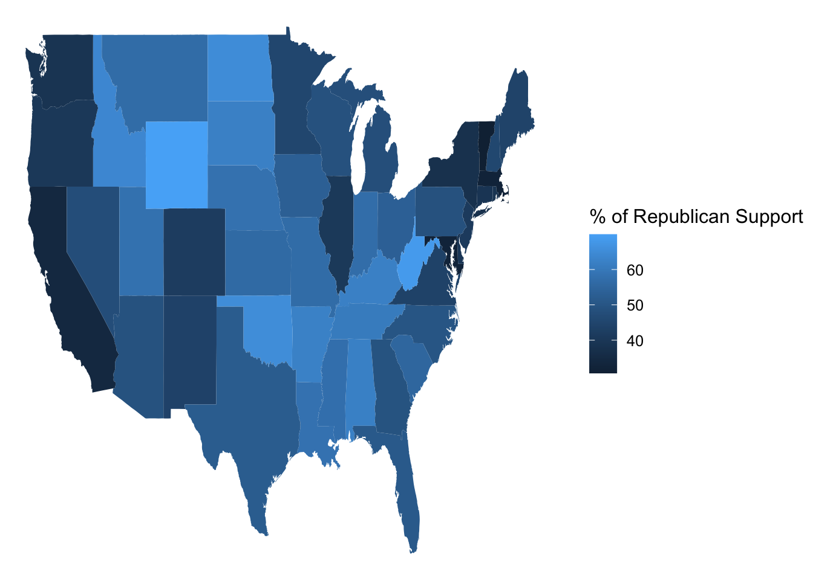
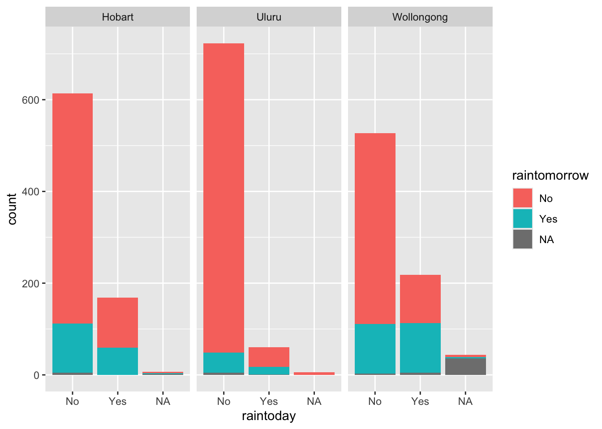
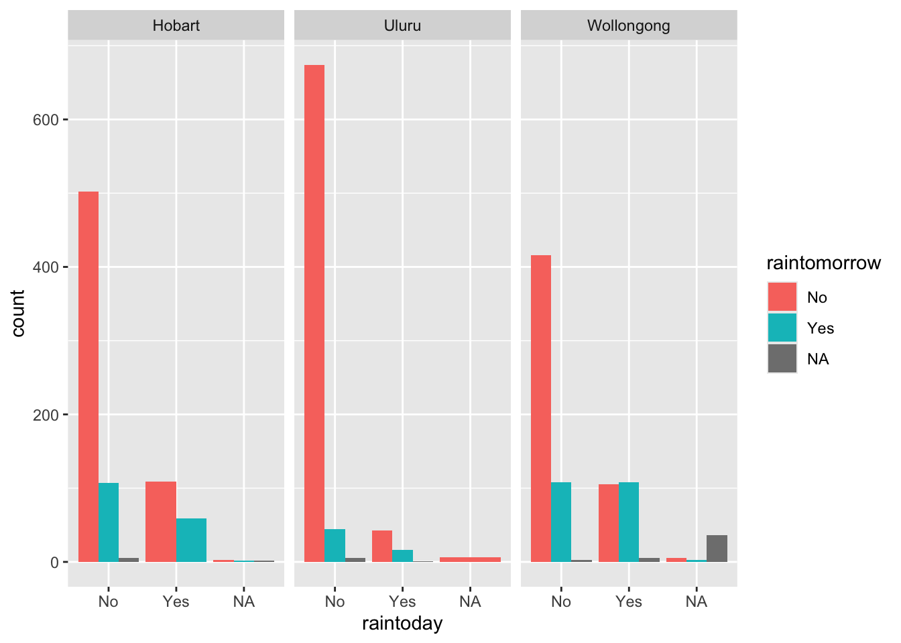
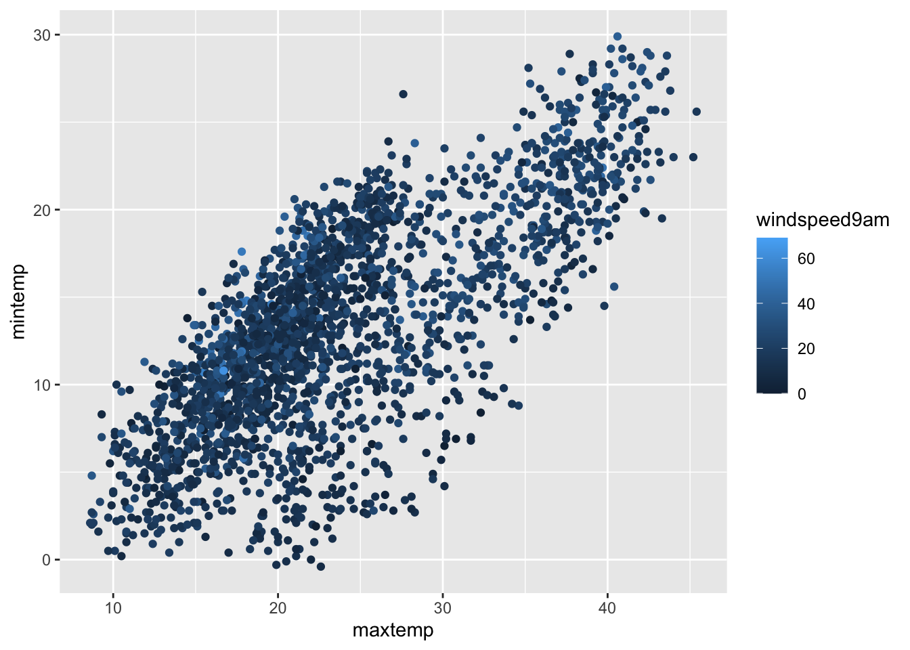
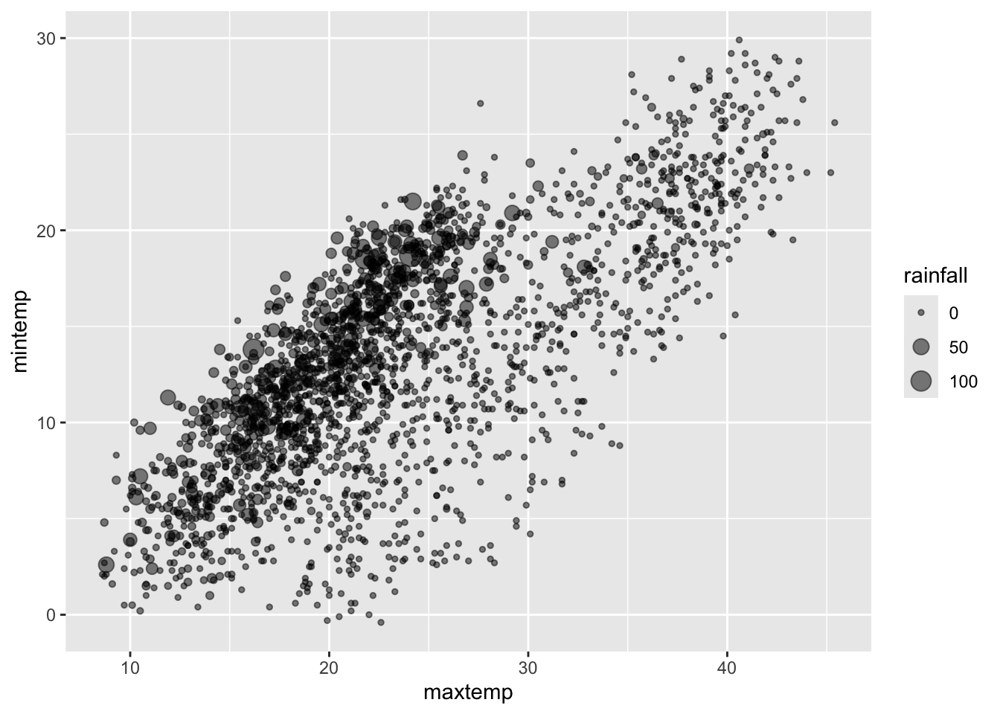
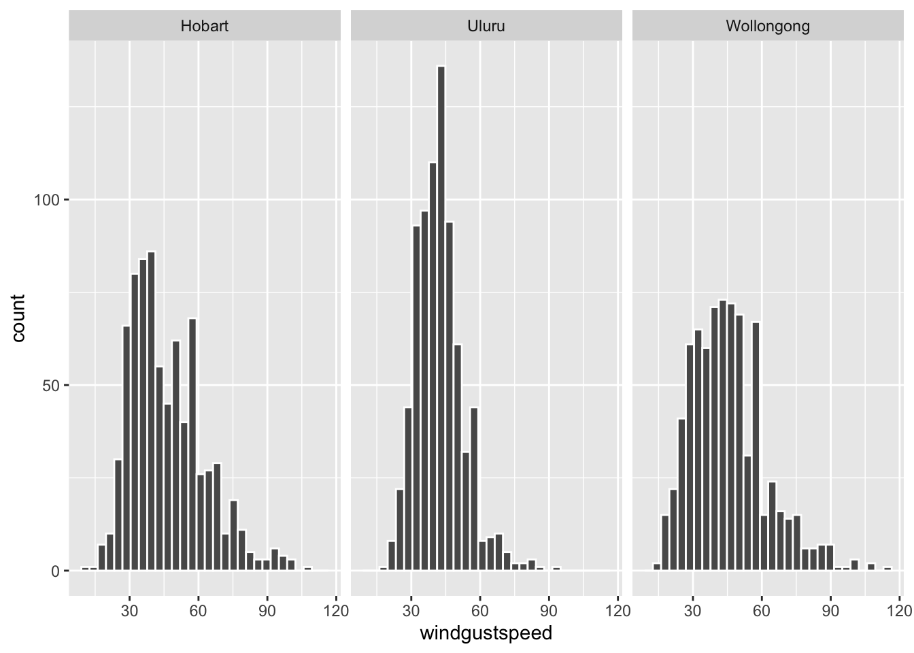
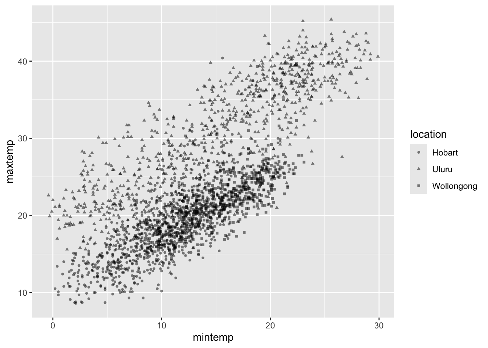

9 Exam 1 Summary
9.1 The Max Number of Variables in a Viz is 7:
- X-axis
- Y-axis
- Opacity
- Color
- Size
- Shape
- Facets
- 3 dimensions
9.2 Effective Viz Checklist:
Is graph effective?
right for data
appropriate for story
clear purpose
appropriate audience
unbiased / inclusive
not misleading
Is graph complete?
title
subtitle
X-axis label
X-axis marks
Y-axis label
Y-axis marks
legend title
legend labels
capition (author, date, source)
data labels
date annotation
Is graph accessible
color (fill, border, background, text)
alt-text
text size
9.3 Steps to an Effective Viz:
- Identify simple research questions
- what do you want to understand about the variables or the relationships among them?
- Start with the basic and work incrementally
- Identify what variables you want to include in your plot and what structure these have (e.g: categorical, quantitative, dates)
- start simply, build a plot of just one of these variables, or the relationship between two of the variables
- set up a plotting frame and add just one geometric layer at a time
- start tweaking: add whatever new variables you want to examine
- Ask your plot questions
- what questions does your plot answer? What questions are left unanswered by your plot?
- what new questions does your plot spark/inspire?
- do you have the visualization tools to answer these questions, or might you learn more?
- Focus
- reporting a large number of visualizations can overwhelm the audience and obscure your conclusions. Instead, pick out a focused yet comprehensive set of visualizations.
9.4 Data in Spreadsheets is Called Tidy When:
- Each row = a unit of observation
- Each column = a measure of some variable of interest:
- quantitative = numbers with units
- categorical = discrete possibilities or categories
- Each entry contains a single data value, ie, no analysis, summaries, footnotes, comments, etc. Only one value per cell
9.5 Bivariate / Multivariate Viz:
In bivariate viz there are two variables. One is an independent variable and one is a dependent variable. You are trying to explain the variability of one variable relative to the other.
Code

Code
$x
[1] "Percent of Republican Vote in 2016"
$y
[1] "Percent of Republican Support in 2020"
$title
[1] "Republican Vote by County in 2016 vs 2020"
attr(,"class")
[1] "labels"In multivariate viz, you just use more variables to show the relationship between them.
Code
weather <- read.csv("https://mac-stat.github.io/data/weather_3_locations.csv") |>
mutate(date = as.Date(date))
ggplot(weather, aes(y = temp3pm, x = temp9am, color = location)) +
geom_point(alpha = 0.5) +
geom_smooth(method = "lm") +
labs(x = "Temperature at 9 am", title = "Weather observation in Australia",y = "Temperature at 3 pm", color = "Location")
9.6 Spatial Viz:
Create a map widget by calling leaflet( ) and telling it the data to use
Code
Add a base map using addTiles( ) or addProviderTiles( )
Add layers to the map using layer functions(addMarkers( ) or addPolygons( ))
Print the map widget to display it
9.7 The 3 Types of Spatial Viz:
Point map: Maps plotting individual observations
Code

Contour maps: Maps plotting the density of the distribution of observations
Code
starbucks_cma <- starbucks_cma <- starbucks |>
filter(Country %in% c('CA', 'MX', 'US'))
cma_boundaries <- ne_states(
country = c("canada", "mexico", "united states of america"),
returnclass = "sf")
ggplot(cma_boundaries) +
geom_sf() +
geom_density_2d(
data = starbucks_cma,
aes(x = Longitude, y = Latitude),
size = 0.2,
color = "darkgreen"
) +
coord_sf(xlim = c(-179.14, -50), ylim = c(14.54, 83.11)) +
theme_map()
Choropleth maps: Maps plotting outcomes in different regions
Code
elections_by_state <- read.csv("https://mac-stat.github.io/data/election_2020_by_state.csv")
elections_by_counties <- read.csv("https://mac-stat.github.io/data/election_2020_county.csv")
elections_by_state <- elections_by_state |>
filter(state_abbr != "DC") |>
select(state_name, state_abbr, repub_pct_20) |>
mutate(repub_20_categories =
cut(repub_pct_20,
breaks = seq(30, 70, by = 5),
labels = c("30-34", "35-39", "40-44", "45-49",
"50-54", "55-59", "60-64", "65-70"),
include.lowest = TRUE))
elections_by_counties <- elections_by_counties |>
select(state_name, state_abbr, county_name, county_fips,
repub_pct_20, median_age, median_rent) |>
mutate(repub_20_categories =
cut(repub_pct_20,
breaks = seq(0, 100, by = 10),
labels = c("0-9", "10-19", "20-29", "30-39", "40-49",
"50-59", "60-69", "70-79", "80-89", "90-100"),
include.lowest = TRUE))
states_map <- map_data("state")
ggplot(elections_by_state, aes(map_id = state_name, fill = repub_pct_20)) +
geom_map(map = states_map) +
expand_limits(x = states_map$long, y = states_map$lat) +
theme_map() +
labs(fill = "% of Republican Support")
9.8 Alt text and titles
Alt text is a written description of the viz that can be read by a screen reader
Code
![This is a density plot containing a numerical and a categorical variable. The numerical variable in the temperature at 3 pm in Celcius. The categorical variable is the location where the temperature was measured. The numerical variable, the temperature, is on the x-axis. The y-axis represents the density of observations. The density plot has created 3 different lumps, each color coded for the legend which matches them to their location. The Hobart lump rises from 0 degrees celcius to 12.5, where it plateus before falling again at 17.5 and becoming exponentially lower on the y-axis as it approaches 40 degrees celcius on the x-axis. The Uluru lump rises from 10 degrees celcius, and has a series of plataeus followed by elevations until it reaches 37.5 degrees where it begins its decline till it reaches 40 degrees celcius on the x-axis. The Wollongong lump rises rapidly at 12.5 degrees celcius, peaks at 20 degrees celcius, and then rapidly falls till 27.5 degrees celcius where it then has a slightly negative plateuatill 40 degrees celcius.](exam_1_files/figure-html/unnamed-chunk-10-1.png)
The title is a 1-sentence description of a plot

9.9 Categorical plots
1 variable:
Bar chart (just counts observations)
Code

2 variables:
Bar charts: - stacked (heights vary, but each color (stripe) of the bar follows the Y-axis)

- dodge (side by side)
- proportional (all same height)
- this loses information about the number of observations

3 variables:
Facted wrapped bar charts: - facet wrapped stacked

- facet wrapped dodge
Code

- facet wrapped proportional

9.10 Numerical Plots:
1 variable:
Histogram
Box plot
Density plot
2 variables:
Scatterplot

Line plot
3 variables:
Scatterplot - color

- proportional symbols
Code

- opacity
9.11 Mixed Variable Plots:
1 numerical + 1 categorical:
Density plots: - faceted
- color
Box plot (faceted)
Violin
Histograms: - faceted
Code

- fill / color
1 numerical + 2 categorical:
Heat map
Code
education <- read.csv("https://mac-stat.github.io/data/sat.csv")
plot_data <- education |>
column_to_rownames("State") |>
data.matrix() |>
scale()
heatmap.2(plot_data,
dendrogram = "none",
Rowv = NA,
scale = "column",
keysize = 0.7,
density.info = "none",
col = hcl.colors(256),
margins = c(10, 20),
colsep = c(1:7), rowsep = (1:50), sepwidth = c(0.05, 0.05),
sepcolor = "white", trace = "none"
)
2 numerical + 1 categorical:
Scatterplots: - faceted
- fill / coor
- shape
Code

- labeled points
9.12 Data manipulation
Piping: Use the |> pipe operator. It makes the object on the left side pass to the function on the right to the get a new object.
Types of reshaped data: - Aggregated data - Data that has had functions like group_by() or summarize() done to it. It gains aggregate information about the observations but loses data on individual observations - Raw data, reshaped - Data that is reshaped to maintain individual observations, but in a way that it can be properly manipulated
Unit of observation: The level at which data is collected and analyzed, by individual cases or groups.
For example, in a dataset of students, each student is the unit of observation. In a dataset of cities, each city is the unit of observation. In a datset of daily weather data, each day is the unit of observation
9.13 Command List:
| Verb | Outcome |
|---|---|
arrange |
Arrange the rows according to a variable |
filter |
Filter out or obtain a subset of the rows |
select |
Select a subset of the columns |
mutate |
Mutate or create a column |
summarize |
Calculate a numerical summary of a column |
group_by |
Group the rows by a specified column |
ungroup |
Ungroups the previous group_by
|
count() |
Counts the number of observations in a group or just the whole column |
n() |
Also counts the number of observations in a group, but must be used inside of summarize or mutate
|
na.rm |
Makes it so that the expressions you use in your command do not have the NA value |
as.factor |
Use it in the mutate command to make a variable categorical |
as.numeric |
Use it in the mutate command to make a variable numeric |
head() |
Shows first rows of dataset |
library(package) |
Loads package into program |
arrange:
We have dataset weather
date location mintemp maxtemp rainfall evaporation sunshine
1 2020-01-01 Wollongong 17.1 23.1 0 NA NA
2 2020-01-02 Wollongong 17.7 24.2 0 NA NA
3 2020-01-03 Wollongong 19.7 26.8 0 NA NA
4 2020-01-04 Wollongong 20.4 35.5 0 NA NA
5 2020-01-05 Wollongong 19.8 21.4 0 NA NA
6 2020-01-06 Wollongong 18.3 22.9 0 NA NA
windgustdir windgustspeed winddir9am winddir3pm windspeed9am windspeed3pm
1 SSW 39 SSW SSE 20 15
2 SSW 37 S ENE 13 15
3 NE 41 NNW NNE 7 17
4 SSW 78 NE NNE 15 17
5 SSW 57 SSW S 31 35
6 NE 35 ESE NE 17 20
humidity9am humidity3pm pressure9am pressure3pm cloud9am cloud3pm temp9am
1 69 64 1014.9 1014.0 8 1 19.1
2 72 54 1020.1 1017.7 7 1 19.8
3 72 71 1017.5 1013.0 6 NA 23.4
4 77 69 1008.8 1003.9 NA NA 24.5
5 70 75 1018.9 1019.9 NA 7 20.7
6 71 71 1021.2 1018.2 NA NA 20.9
temp3pm raintoday risk_mm raintomorrow
1 22.9 No 0.0 No
2 23.6 No 0.0 No
3 25.7 No 0.0 No
4 26.7 No 0.0 No
5 20.0 No 0.0 No
6 22.6 No 0.8 NoAnd we use arrange(maxtemp) on it to order observations from lowest to highest value in maxtemp
date location mintemp maxtemp rainfall evaporation sunshine windgustdir
1 2020-07-10 Hobart 2.1 8.6 0.0 0.4 NA NNW
2 2020-06-18 Hobart 2.0 8.7 0.0 0.8 NA NNW
3 2021-06-22 Hobart 2.7 8.7 0.0 0.6 NA NNW
4 2021-07-25 Hobart 4.8 8.7 1.4 1.2 NA NW
5 2020-07-11 Hobart 2.1 8.8 0.0 0.0 NA NNW
6 2020-08-05 Hobart 2.6 8.8 46.2 1.2 NA S
windgustspeed winddir9am winddir3pm windspeed9am windspeed3pm humidity9am
1 37 NNW N 20 13 92
2 31 NNW NNW 17 11 82
3 31 NNW NNW 19 13 94
4 69 WNW W 35 17 64
5 30 NNW NNW 20 13 88
6 70 SSW SSW 30 28 79
humidity3pm pressure9am pressure3pm cloud9am cloud3pm temp9am temp3pm
1 80 1026.0 1022.4 7 7 2.1 7.5
2 65 1035.2 1030.4 1 7 3.3 8.6
3 75 1030.2 1027.5 7 7 3.7 8.2
4 81 987.5 992.3 6 7 6.5 4.9
5 75 1018.4 1015.9 7 7 4.5 8.8
6 76 1012.0 1011.6 7 7 6.6 7.4
raintoday risk_mm raintomorrow
1 No 0.0 No
2 No 0.0 No
3 No 0.0 No
4 Yes 2.8 Yes
5 No 0.8 No
6 Yes 2.6 YesOr arrange(desc(maxtemp)) to order observations from highest to lowest value in maxtemp
date location mintemp maxtemp rainfall evaporation sunshine windgustdir
1 2021-12-18 Uluru 25.6 45.4 0 NA NA NNE
2 2020-11-28 Uluru 23.0 45.2 0 NA NA SSW
3 2021-12-17 Uluru 23.0 44.0 0 NA NA NW
4 2022-01-11 Uluru 26.8 43.8 0 NA NA ESE
5 2020-02-13 Uluru 28.8 43.6 0 NA NA NNE
6 2020-02-14 Uluru 27.9 43.5 0 NA NA SSW
windgustspeed winddir9am winddir3pm windspeed9am windspeed3pm humidity9am
1 39 ESE NW 17 22 20
2 54 S N 15 17 18
3 50 NE WNW 19 13 21
4 56 SE ESE 20 20 26
5 52 NE E 24 7 16
6 46 ESE S 19 20 17
humidity3pm pressure9am pressure3pm cloud9am cloud3pm temp9am temp3pm
1 8 1005.7 1002.0 NA NA 36.8 44.5
2 6 1005.4 1001.3 NA NA 36.6 43.7
3 10 1006.4 1001.7 2 1 33.4 43.5
4 7 1011.7 1007.5 NA NA 31.7 42.2
5 14 1006.8 1002.0 NA 2 34.8 42.2
6 13 1006.8 1002.8 2 2 34.7 41.3
raintoday risk_mm raintomorrow
1 No 0 No
2 No 0 No
3 No 0 No
4 No 0 No
5 No 0 No
6 No 0 Nofilter:
We can use filter(maxtemp < 45) to get observations with a maxtemp below 45
date location mintemp maxtemp rainfall evaporation sunshine
1 2020-01-01 Wollongong 17.1 23.1 0 NA NA
2 2020-01-02 Wollongong 17.7 24.2 0 NA NA
3 2020-01-03 Wollongong 19.7 26.8 0 NA NA
4 2020-01-04 Wollongong 20.4 35.5 0 NA NA
5 2020-01-05 Wollongong 19.8 21.4 0 NA NA
6 2020-01-06 Wollongong 18.3 22.9 0 NA NA
windgustdir windgustspeed winddir9am winddir3pm windspeed9am windspeed3pm
1 SSW 39 SSW SSE 20 15
2 SSW 37 S ENE 13 15
3 NE 41 NNW NNE 7 17
4 SSW 78 NE NNE 15 17
5 SSW 57 SSW S 31 35
6 NE 35 ESE NE 17 20
humidity9am humidity3pm pressure9am pressure3pm cloud9am cloud3pm temp9am
1 69 64 1014.9 1014.0 8 1 19.1
2 72 54 1020.1 1017.7 7 1 19.8
3 72 71 1017.5 1013.0 6 NA 23.4
4 77 69 1008.8 1003.9 NA NA 24.5
5 70 75 1018.9 1019.9 NA 7 20.7
6 71 71 1021.2 1018.2 NA NA 20.9
temp3pm raintoday risk_mm raintomorrow
1 22.9 No 0.0 No
2 23.6 No 0.0 No
3 25.7 No 0.0 No
4 26.7 No 0.0 No
5 20.0 No 0.0 No
6 22.6 No 0.8 Noselect:
We can use select(maxtemp, mintemp, location) to only select those columns
maxtemp mintemp location
1 23.1 17.1 Wollongong
2 24.2 17.7 Wollongong
3 26.8 19.7 Wollongong
4 35.5 20.4 Wollongong
5 21.4 19.8 Wollongong
6 22.9 18.3 WollongongOr we can use (-maxtemp) to select all columns except maxtemp
date location mintemp rainfall evaporation sunshine windgustdir
1 2020-01-01 Wollongong 17.1 0 NA NA SSW
2 2020-01-02 Wollongong 17.7 0 NA NA SSW
3 2020-01-03 Wollongong 19.7 0 NA NA NE
4 2020-01-04 Wollongong 20.4 0 NA NA SSW
5 2020-01-05 Wollongong 19.8 0 NA NA SSW
6 2020-01-06 Wollongong 18.3 0 NA NA NE
windgustspeed winddir9am winddir3pm windspeed9am windspeed3pm humidity9am
1 39 SSW SSE 20 15 69
2 37 S ENE 13 15 72
3 41 NNW NNE 7 17 72
4 78 NE NNE 15 17 77
5 57 SSW S 31 35 70
6 35 ESE NE 17 20 71
humidity3pm pressure9am pressure3pm cloud9am cloud3pm temp9am temp3pm
1 64 1014.9 1014.0 8 1 19.1 22.9
2 54 1020.1 1017.7 7 1 19.8 23.6
3 71 1017.5 1013.0 6 NA 23.4 25.7
4 69 1008.8 1003.9 NA NA 24.5 26.7
5 75 1018.9 1019.9 NA 7 20.7 20.0
6 71 1021.2 1018.2 NA NA 20.9 22.6
raintoday risk_mm raintomorrow
1 No 0.0 No
2 No 0.0 No
3 No 0.0 No
4 No 0.0 No
5 No 0.0 No
6 No 0.8 Nomutate:
We can use mutate(double_maxtemp = maxtemp * 2) to create a new column
maxtemp mintemp
1 23.1 17.1
2 24.2 17.7
3 26.8 19.7
4 35.5 20.4
5 21.4 19.8
6 22.9 18.3summarize:
We can use summarize(mean_mintemp = mean(mintemp)) to summarize the mintemp column as a mean
mean_mintemp
1 13.26417group_by:
We can use group_by(location) to make the unit of observation location, and then use a function like summarize(avg_mintemp = mean(mintemp))
# A tibble: 3 × 2
location avg_mintemp
<chr> <dbl>
1 Hobart 9.47
2 Uluru 15.3
3 Wollongong 15.1 ungroup:
You can reverse the unit of observation you select in group_by by using ungroup by, but only if you didn’t use summarize. In this example, we use group_by(location), then mutate(avg_mintemp = mean(mintemp)), then ungroup()
Code
# A tibble: 6 × 25
date location mintemp maxtemp rainfall evaporation sunshine windgustdir
<date> <chr> <dbl> <dbl> <dbl> <dbl> <dbl> <chr>
1 2020-01-01 Wollongo… 17.1 23.1 0 NA NA SSW
2 2020-01-02 Wollongo… 17.7 24.2 0 NA NA SSW
3 2020-01-03 Wollongo… 19.7 26.8 0 NA NA NE
4 2020-01-04 Wollongo… 20.4 35.5 0 NA NA SSW
5 2020-01-05 Wollongo… 19.8 21.4 0 NA NA SSW
6 2020-01-06 Wollongo… 18.3 22.9 0 NA NA NE
# ℹ 17 more variables: windgustspeed <int>, winddir9am <chr>, winddir3pm <chr>,
# windspeed9am <int>, windspeed3pm <int>, humidity9am <int>,
# humidity3pm <int>, pressure9am <dbl>, pressure3pm <dbl>, cloud9am <int>,
# cloud3pm <int>, temp9am <dbl>, temp3pm <dbl>, raintoday <chr>,
# risk_mm <dbl>, raintomorrow <chr>, avg_mintemp <dbl>count:
We have dataset hikes
peak elevation difficulty ascent length time rating
1 Mt. Marcy 5344 5 3166 14.8 10.0 moderate
2 Algonquin Peak 5114 5 2936 9.6 9.0 moderate
3 Mt. Haystack 4960 7 3570 17.8 12.0 difficult
4 Mt. Skylight 4926 7 4265 17.9 15.0 difficult
5 Whiteface Mtn. 4867 4 2535 10.4 8.5 easy
6 Dix Mtn. 4857 5 2800 13.2 10.0 moderateWe can use count(rating) to count the number of observations in the location column for each value
We can also use count() to count the total observations in the dataset
n:
We can use n() in a summarize function to count the number of observations in a group, similar to count
Code
# A tibble: 3 × 2
rating total_trails
<chr> <int>
1 difficult 8
2 easy 11
3 moderate 27na.rm:
We can use na.rm = TRUE in a summarize function to remove all NA values in a column
as.factor:
We can use as.factor(windgustdir) in a mutate function to make it a factor
date location mintemp maxtemp rainfall evaporation sunshine
1 2020-01-01 Wollongong 17.1 23.1 0 NA NA
2 2020-01-02 Wollongong 17.7 24.2 0 NA NA
3 2020-01-03 Wollongong 19.7 26.8 0 NA NA
4 2020-01-04 Wollongong 20.4 35.5 0 NA NA
5 2020-01-05 Wollongong 19.8 21.4 0 NA NA
6 2020-01-06 Wollongong 18.3 22.9 0 NA NA
windgustdir windgustspeed winddir9am winddir3pm windspeed9am windspeed3pm
1 SSW 39 SSW SSE 20 15
2 SSW 37 S ENE 13 15
3 NE 41 NNW NNE 7 17
4 SSW 78 NE NNE 15 17
5 SSW 57 SSW S 31 35
6 NE 35 ESE NE 17 20
humidity9am humidity3pm pressure9am pressure3pm cloud9am cloud3pm temp9am
1 69 64 1014.9 1014.0 8 1 19.1
2 72 54 1020.1 1017.7 7 1 19.8
3 72 71 1017.5 1013.0 6 NA 23.4
4 77 69 1008.8 1003.9 NA NA 24.5
5 70 75 1018.9 1019.9 NA 7 20.7
6 71 71 1021.2 1018.2 NA NA 20.9
temp3pm raintoday risk_mm raintomorrow
1 22.9 No 0.0 No
2 23.6 No 0.0 No
3 25.7 No 0.0 No
4 26.7 No 0.0 No
5 20.0 No 0.0 No
6 22.6 No 0.8 Noas.numeric:
We can use as.numeric(mintemp) in a mutate function to make mintemp a number (even though it was already a number)
date location mintemp maxtemp rainfall evaporation sunshine
1 2020-01-01 Wollongong 17.1 23.1 0 NA NA
2 2020-01-02 Wollongong 17.7 24.2 0 NA NA
3 2020-01-03 Wollongong 19.7 26.8 0 NA NA
4 2020-01-04 Wollongong 20.4 35.5 0 NA NA
5 2020-01-05 Wollongong 19.8 21.4 0 NA NA
6 2020-01-06 Wollongong 18.3 22.9 0 NA NA
windgustdir windgustspeed winddir9am winddir3pm windspeed9am windspeed3pm
1 SSW 39 SSW SSE 20 15
2 SSW 37 S ENE 13 15
3 NE 41 NNW NNE 7 17
4 SSW 78 NE NNE 15 17
5 SSW 57 SSW S 31 35
6 NE 35 ESE NE 17 20
humidity9am humidity3pm pressure9am pressure3pm cloud9am cloud3pm temp9am
1 69 64 1014.9 1014.0 8 1 19.1
2 72 54 1020.1 1017.7 7 1 19.8
3 72 71 1017.5 1013.0 6 NA 23.4
4 77 69 1008.8 1003.9 NA NA 24.5
5 70 75 1018.9 1019.9 NA 7 20.7
6 71 71 1021.2 1018.2 NA NA 20.9
temp3pm raintoday risk_mm raintomorrow
1 22.9 No 0.0 No
2 23.6 No 0.0 No
3 25.7 No 0.0 No
4 26.7 No 0.0 No
5 20.0 No 0.0 No
6 22.6 No 0.8 Nohead():
We can use head(weather) to check out the first few rows of the weather dataset
date location mintemp maxtemp rainfall evaporation sunshine
1 2020-01-01 Wollongong 17.1 23.1 0 NA NA
2 2020-01-02 Wollongong 17.7 24.2 0 NA NA
3 2020-01-03 Wollongong 19.7 26.8 0 NA NA
4 2020-01-04 Wollongong 20.4 35.5 0 NA NA
5 2020-01-05 Wollongong 19.8 21.4 0 NA NA
6 2020-01-06 Wollongong 18.3 22.9 0 NA NA
windgustdir windgustspeed winddir9am winddir3pm windspeed9am windspeed3pm
1 SSW 39 SSW SSE 20 15
2 SSW 37 S ENE 13 15
3 NE 41 NNW NNE 7 17
4 SSW 78 NE NNE 15 17
5 SSW 57 SSW S 31 35
6 NE 35 ESE NE 17 20
humidity9am humidity3pm pressure9am pressure3pm cloud9am cloud3pm temp9am
1 69 64 1014.9 1014.0 8 1 19.1
2 72 54 1020.1 1017.7 7 1 19.8
3 72 71 1017.5 1013.0 6 NA 23.4
4 77 69 1008.8 1003.9 NA NA 24.5
5 70 75 1018.9 1019.9 NA 7 20.7
6 71 71 1021.2 1018.2 NA NA 20.9
temp3pm raintoday risk_mm raintomorrow
1 22.9 No 0.0 No
2 23.6 No 0.0 No
3 25.7 No 0.0 No
4 26.7 No 0.0 No
5 20.0 No 0.0 No
6 22.6 No 0.8 Nolibrary():
When you want to use a package that has been downloaded, use download(the package’s name). For example:
9.14 Logical Operators:
| Operator | Meaning |
|---|---|
== |
Equal to |
!= |
Not equal to |
> |
Greater than |
>= |
Greater than or equal to |
< |
Less than |
<= |
Less than or equal to |
%in% c(var1, var2) |
Is equal to var1, var2, etc. |
We can use logical operators to do various things. For example, in data manipulation, you can use it with a filter function like this:
date location mintemp maxtemp rainfall evaporation sunshine
1 2020-01-01 Wollongong 17.1 23.1 0 NA NA
2 2020-01-02 Wollongong 17.7 24.2 0 NA NA
3 2020-01-03 Wollongong 19.7 26.8 0 NA NA
4 2020-01-04 Wollongong 20.4 35.5 0 NA NA
5 2020-01-05 Wollongong 19.8 21.4 0 NA NA
6 2020-01-06 Wollongong 18.3 22.9 0 NA NA
windgustdir windgustspeed winddir9am winddir3pm windspeed9am windspeed3pm
1 SSW 39 SSW SSE 20 15
2 SSW 37 S ENE 13 15
3 NE 41 NNW NNE 7 17
4 SSW 78 NE NNE 15 17
5 SSW 57 SSW S 31 35
6 NE 35 ESE NE 17 20
humidity9am humidity3pm pressure9am pressure3pm cloud9am cloud3pm temp9am
1 69 64 1014.9 1014.0 8 1 19.1
2 72 54 1020.1 1017.7 7 1 19.8
3 72 71 1017.5 1013.0 6 NA 23.4
4 77 69 1008.8 1003.9 NA NA 24.5
5 70 75 1018.9 1019.9 NA 7 20.7
6 71 71 1021.2 1018.2 NA NA 20.9
temp3pm raintoday risk_mm raintomorrow
1 22.9 No 0.0 No
2 23.6 No 0.0 No
3 25.7 No 0.0 No
4 26.7 No 0.0 No
5 20.0 No 0.0 No
6 22.6 No 0.8 No9.15 Selection Commands:
| Verb | Output |
|---|---|
starts_with("string") |
Selects columns that start with the given string |
ends_with("string") |
Selects columns that end with the given string |
contains("string") |
Selects columns that contain the given string |
names(dataset1) |
Returns the names of all columns in the dataset |
is.na |
Selects values that are NA
|
!is.na |
Selects values that are not NA
|
na.omit() |
Removes rows with any NA values from the dataset |
starts_with():
We can use starts_with(“wind”) in a select function to select columns that start with wind
windgustdir windgustspeed winddir9am winddir3pm windspeed9am windspeed3pm
1 SSW 39 SSW SSE 20 15
2 SSW 37 S ENE 13 15
3 NE 41 NNW NNE 7 17
4 SSW 78 NE NNE 15 17
5 SSW 57 SSW S 31 35
6 NE 35 ESE NE 17 20ends_with():
We can use ends_with(“pm”) in a select function to select columns of measurements taken in the second half of the day
winddir3pm windspeed3pm humidity3pm pressure3pm cloud3pm temp3pm
1 SSE 15 64 1014.0 1 22.9
2 ENE 15 54 1017.7 1 23.6
3 NNE 17 71 1013.0 NA 25.7
4 NNE 17 69 1003.9 NA 26.7
5 S 35 75 1019.9 7 20.0
6 NE 20 71 1018.2 NA 22.6contains():
We can use contains(“3”) in a select function to select columns with measurements at 3 pm or am
winddir3pm windspeed3pm humidity3pm pressure3pm cloud3pm temp3pm
1 SSE 15 64 1014.0 1 22.9
2 ENE 15 54 1017.7 1 23.6
3 NNE 17 71 1013.0 NA 25.7
4 NNE 17 69 1003.9 NA 26.7
5 S 35 75 1019.9 7 20.0
6 NE 20 71 1018.2 NA 22.6name:
We can use names(weather) to get the names of each column in the weather dataset
[1] "date" "location" "mintemp" "maxtemp"
[5] "rainfall" "evaporation" "sunshine" "windgustdir"
[9] "windgustspeed" "winddir9am" "winddir3pm" "windspeed9am"
[13] "windspeed3pm" "humidity9am" "humidity3pm" "pressure9am"
[17] "pressure3pm" "cloud9am" "cloud3pm" "temp9am"
[21] "temp3pm" "raintoday" "risk_mm" "raintomorrow" is.na():
We can use is.na(cloud9am) in a filter function to select observations which have NA values in the clouds9am column
date location mintemp maxtemp rainfall evaporation sunshine
1 2020-01-04 Wollongong 20.4 35.5 0.0 NA NA
2 2020-01-05 Wollongong 19.8 21.4 0.0 NA NA
3 2020-01-06 Wollongong 18.3 22.9 0.0 NA NA
4 2020-01-07 Wollongong 19.9 25.6 0.8 NA NA
5 2020-01-09 Wollongong 19.8 23.1 0.0 NA NA
6 2020-01-10 Wollongong 20.5 25.4 0.0 NA NA
windgustdir windgustspeed winddir9am winddir3pm windspeed9am windspeed3pm
1 SSW 78 NE NNE 15 17
2 SSW 57 SSW S 31 35
3 NE 35 ESE NE 17 20
4 S 44 NNW E 30 7
5 S 39 SSW S 24 26
6 NE 56 N NE 19 39
humidity9am humidity3pm pressure9am pressure3pm cloud9am cloud3pm temp9am
1 77 69 1008.8 1003.9 NA NA 24.5
2 70 75 1018.9 1019.9 NA 7 20.7
3 71 71 1021.2 1018.2 NA NA 20.9
4 76 72 1015.4 1012.0 NA NA 22.9
5 76 79 1018.4 1016.9 NA NA 21.2
6 79 76 1013.0 1006.1 NA NA 23.0
temp3pm raintoday risk_mm raintomorrow
1 26.7 No 0.0 No
2 20.0 No 0.0 No
3 22.6 No 0.8 No
4 24.9 No 1.6 Yes
5 22.2 No 0.0 No
6 25.1 No 1.0 No!is.na():
We can use !is.na(cloud9am) in a filter function to select observations which don’t have NA values in the clouds9am column
date location mintemp maxtemp rainfall evaporation sunshine
1 2020-01-01 Wollongong 17.1 23.1 0.0 NA NA
2 2020-01-02 Wollongong 17.7 24.2 0.0 NA NA
3 2020-01-03 Wollongong 19.7 26.8 0.0 NA NA
4 2020-01-08 Wollongong 20.1 23.2 1.6 NA NA
5 2020-01-18 Wollongong 17.0 22.4 9.6 NA NA
6 2020-01-19 Wollongong 18.3 22.8 2.8 NA NA
windgustdir windgustspeed winddir9am winddir3pm windspeed9am windspeed3pm
1 SSW 39 SSW SSE 20 15
2 SSW 37 S ENE 13 15
3 NE 41 NNW NNE 7 17
4 S 41 S S 31 33
5 SSW 57 SSW SSW 41 31
6 S 19 SSW SSW 6 15
humidity9am humidity3pm pressure9am pressure3pm cloud9am cloud3pm temp9am
1 69 64 1014.9 1014.0 8 1 19.1
2 72 54 1020.1 1017.7 7 1 19.8
3 72 71 1017.5 1013.0 6 NA 23.4
4 77 76 1016.2 1015.2 8 NA 21.3
5 86 71 1010.6 1009.6 8 7 19.6
6 87 87 1009.0 1006.8 8 8 20.1
temp3pm raintoday risk_mm raintomorrow
1 22.9 No 0.0 No
2 23.6 No 0.0 No
3 25.7 No 0.0 No
4 22.2 Yes 0.0 No
5 21.6 Yes 2.8 Yes
6 20.9 Yes 1.0 Nona.omit():
We can use na.omit(weather) to remove all observations with NA values
date location mintemp maxtemp rainfall evaporation sunshine
790 2020-01-01 Hobart 11.9 23.3 0 7.8 10.4
791 2020-01-02 Hobart 15.7 25.9 0 9.6 10.4
792 2020-01-03 Hobart 14.8 20.7 0 7.0 7.1
793 2020-01-04 Hobart 15.8 28.1 0 6.8 3.5
794 2020-01-05 Hobart 11.6 22.9 0 6.4 9.7
795 2020-01-06 Hobart 9.6 20.9 0 6.8 11.2
windgustdir windgustspeed winddir9am winddir3pm windspeed9am windspeed3pm
790 NNW 52 NW NNW 26 28
791 NW 50 NNW SE 22 30
792 SSE 30 ESE ESE 9 17
793 W 80 NNW WSW 20 24
794 WNW 52 NNW E 22 15
795 SSW 37 E SSE 9 20
humidity9am humidity3pm pressure9am pressure3pm cloud9am cloud3pm temp9am
790 41 36 1010.8 1009.3 3 7 17.4
791 43 60 1015.1 1015.0 6 6 19.0
792 64 59 1016.6 1011.8 7 7 16.2
793 49 28 1001.6 1005.3 6 6 19.9
794 48 27 1020.7 1019.6 7 3 14.2
795 54 53 1022.9 1019.7 3 1 15.3
temp3pm raintoday risk_mm raintomorrow
790 22.1 No 0 No
791 19.0 No 0 No
792 19.7 No 0 No
793 20.6 No 0 No
794 21.9 No 0 No
795 20.8 No 0 No9.16 Date Commands:
| Input | Output |
|---|---|
as.Date(today()) |
Returns today’s date |
year(date) |
Returns the year from the date |
month(date) |
Returns the month (1–12) from the date |
month(date, label = TRUE) |
Returns the month as Jan, Feb, Mar, etc. |
week(date) |
Returns the week of the year from the date |
mday(date) |
Returns the day of the month from the date |
yday(date) |
Returns the day of the year from the date |
wday(date) |
Returns the day of the week (1 = Sunday by default) |
wday(date, label = TRUE) |
Returns the day of the week as text (e.g. Mon, Tue) |
When you type date1 > date2, you are typing a boolean expression that claims that date 1 occurred after date 2. Same goes for >= and <=
When filtering by dates, use “” marks, or it won’t identify the numbers as a date, for example:
date location mintemp maxtemp rainfall evaporation sunshine
1 2020-05-13 Wollongong 12.0 19.4 0.0 NA NA
2 2020-05-14 Wollongong 11.7 17.1 0.0 NA NA
3 2020-05-15 Wollongong 11.9 17.7 0.0 NA NA
4 2020-05-16 Wollongong 11.9 18.0 9.0 NA NA
5 2020-05-17 Wollongong 11.5 18.3 1.0 NA NA
6 2020-05-18 Wollongong 12.1 19.0 17.2 NA NA
windgustdir windgustspeed winddir9am winddir3pm windspeed9am windspeed3pm
1 NW 24 SSW ESE 9 9
2 SSW 46 SW S 26 35
3 S 50 SW SSW 22 33
4 WSW 24 SW SSE 11 9
5 W 24 SW WSW 13 7
6 S 28 SSW ENE 7 15
humidity9am humidity3pm pressure9am pressure3pm cloud9am cloud3pm temp9am
1 46 47 1023.1 1021.5 4 6 15.8
2 67 61 1028.1 1027.2 3 8 14.8
3 58 70 1030.6 1029.0 NA 7 15.2
4 88 71 1032.1 1029.7 8 8 14.4
5 77 86 1031.7 1030.3 NA 8 16.7
6 85 74 1033.7 1030.9 8 8 16.6
temp3pm raintoday risk_mm raintomorrow
1 17.8 No 0.0 No
2 15.9 No 0.0 No
3 15.5 No 9.0 Yes
4 17.5 Yes 1.0 No
5 15.9 No 17.2 Yes
6 17.4 Yes 0.0 No9.17 Reshaping:
You can condense information (pivot longer) to combine information from multiple columns into one. You can also spread information from one column into multiple columns (pivot wider).
| Function | Result |
|---|---|
pivot_wider(names_from = variable1, values_from = variable2) |
Creates a new column for each unique value in variable1; fills each with values from variable2. |
pivot_longer(cols = c(variable1, variable2, variable3), names_to = "variable4", values_to = "variable5") |
Converts multiple columns into two: variable4 stores the original column names, variable5 holds their values. |
pivot_longer(cols = -c(variable1, variable2, variable3), names_to = "variable4", values_to = "variable5") |
Same as above, but pivots all columns except variable1, variable2, and variable3. |
To add a prefix to the name of every new column, use “names_prefix = ‘prefix1’” for pivot_wider at the end of the command. To remove the prefix of the column names in pivot wider, use “names_prefix = ‘prefix2’”. Use it in between names_to and values_to, and it will remove the text (from left to right) in the columns that are combining.
pivot_wider():
We can use the pivot_wider() function to create columns for each row, and assign the value of the average maxtemp for each location depending on if it rained or not
Code
# A tibble: 2 × 4
# Groups: raintoday [2]
raintoday avg_maxtemp_Hobart avg_maxtemp_Uluru avg_maxtemp_Wollongong
<chr> <dbl> <dbl> <dbl>
1 No 18.7 31.2 22.0
2 Yes 15.7 28.1 21.2pivot_longer:
We can use pivot_longer() to create a column for if the temperature measured in the min or max temp that day, and another column for the value of the mintemp or maxtemp
Code
# A tibble: 6 × 4
date location temp temperature
<date> <chr> <chr> <dbl>
1 2020-01-01 Wollongong mintemp 17.1
2 2020-01-01 Wollongong maxtemp 23.1
3 2020-01-02 Wollongong mintemp 17.7
4 2020-01-02 Wollongong maxtemp 24.2
5 2020-01-03 Wollongong mintemp 19.7
6 2020-01-03 Wollongong maxtemp 26.89.18 Joining:
| Function | Result |
|---|---|
dataset1 |> left_join(dataset2) |
Adds matching data from dataset2 to dataset1; keeps all rows from dataset1. |
dataset1 |> right_join(dataset2) |
Adds matching data from dataset1 to dataset2; keeps all rows from dataset2. |
dataset1 |> inner_join(dataset2) |
Keeps only rows with matches in both datasets; removes rows with no match (no NAs). |
dataset1 |> full_join(dataset2) |
Combines all rows from both datasets; fills with NA where there are no matches. |
dataset1 |> anti_join(dataset2) |
Keeps rows from dataset1 that do not match anything in dataset2. |
dataset1 |> semi_join(dataset2) |
Keeps rows from dataset1 that have a match in dataset2, but includes only columns from dataset1. |
Inside the join functions, you should specify join_by(commonon_column == common_column) to make sure the right observations are matched together
left_join:
We can insert how many students are enrolled in each class by inserting information from the courses_combined dataset into the grades dataset by using left_join()
Code
sid grade sessionID enroll
1 S31185 D+ session1784 22
2 S31185 B+ session1785 52
3 S31185 A- session1791 22
4 S31185 B+ session1792 20
5 S31185 B- session1794 22
6 S31185 C+ session1795 26right_join:
We can also add information about grades and student identification number to courses_combined by using right_join(). New observations(rows) will be created in courses_combined to accomodate the larger number of observations in grades
sid grade sessionID enroll
1 S31185 D+ session1784 22
2 S31185 B+ session1785 52
3 S31185 A- session1791 22
4 S31185 B+ session1792 20
5 S31185 B- session1794 22
6 S31185 C+ session1795 26full_join():
We can use full_join() between the voters and contact datasets to combine as much information as we can about each observation. However, there will be NA values, meaning that some observations will be missing information for certain columns
Code
id times_voted address age
1 A 2 summit 24
2 D 4 fairview 38
3 E 17 <NA> NA
4 F 6 <NA> NA
5 G 20 <NA> NA
6 B NA grand 89
7 C NA snelling 43inner_join():
We can use inner_join() between the voters and contact datasets to combine only observations where the combined information will fill all fields, so that no NA values will be created
id times_voted address age
1 A 2 summit 24
2 D 4 fairview 38anti_join():
We can use anti_join() to exclude all observations in voters that have a match in contact with no NA values
semi_join:
We can use inner_join() between the voters and contact datasets to only show observations in voters where the match in contact has no NA values. This will also not add information to the dataset from contact.